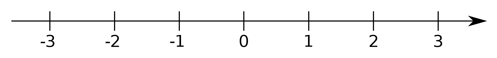

The number 0 is the smallest non-negative integer. The natural number following 0 is 1 and no natural number precedes 0. The number 0 may or may not be considered a natural number, but it is an integer, and hence a rational number and a real number (as well as an algebraic number and a complex number).
The number 0 is neither positive nor negative, and is usually displayed as the central number in a number line. It is neither a prime number nor a composite number. It cannot be prime because it has an infinite number of factors, and cannot be composite because it cannot be expressed as a product of prime numbers (as 0 must always be one of the factors). Zero is, however, even (i.e. a multiple of 2, as well as being a multiple of any other integer, rational, or real number).
The following are some basic (elementary) rules for dealing with the number 0. These rules apply for any real or complex number x, unless otherwise stated.
In set theory, 0 is the cardinality of the empty set: if one does not have any apples, then one has 0 apples. In fact, in certain axiomatic developments of mathematics from set theory, 0 is defined to be the empty set. When this is done, the empty set is the von Neumann cardinal assignment for a set with no elements, which is the empty set. The cardinality function, applied to the empty set, returns the empty set as a value, thereby assigning it 0 elements.
The value zero plays a special role for many physical quantities. For some quantities, the zero level is naturally distinguished from all other levels, whereas for others it is more or less arbitrarily chosen. For example, for an absolute temperature (as measured in kelvins), zero is the lowest possible value (negative temperatures are defined, but negative-temperature systems are not actually colder). This is in contrast to for example temperatures on the Celsius scale, where zero is arbitrarily defined to be at the freezing point of water. Measuring sound intensity in decibels or phons, the zero level is arbitrarily set at a reference value—for example, at a value for the threshold of hearing. In physics, the zero-point energy is the lowest possible energy that a quantum mechanical physical system may possess and is the energy of the ground state of the system.
Zero has been proposed as the atomic number of the theoretical element tetraneutron. It has been shown that a cluster of four neutrons may be stable enough to be considered an atom in its own right. This would create an element with no protons and no charge on its nucleus. As early as 1926, Andreas von Antropoff coined the term neutronium for a conjectured form of matter made up of neutrons with no protons, which he placed as the chemical element of atomic number zero at the head of his new version of the periodic table. It was subsequently placed as a noble gas in the middle of several spiral representations of the periodic system for classifying the chemical elements.
Zero is the value of false in many programming languages. In binary, 0 represents the value for "off", which means no electricity flow.
Many APIs and operating systems that require applications to return an integer value as an exit status typically use zero to indicate success and non-zero values to indicate specific error or warning conditions. Programmers often use a slashed zero to avoid confusion with the letter "O".
The most common practice throughout human history has been to start counting at one. However, in the late 1950s LISP introduced zero-based numbering for arrays while Algol 58 introduced completely flexible basing for array subscripts (allowing any positive, negative, or zero integer as base for array subscripts), and most subsequent programming languages adopted one or other of these positions. For example, the elements of an array are numbered starting from 0 in C, so that for an array of n items the sequence of array indices runs from 0 to n−1. This permits an array element's location to be calculated by adding the index directly to address of the array, whereas 1-based languages precalculate the array's base address to be the position one element before the first.
In comparative zoology and cognitive science, recognition that some animals display awareness of the concept of zero leads to the conclusion that the capability for numerical abstraction arose early in the evolution of species.
In telephony, pressing 0 is often used for dialling out of a company network or to a different city or region, and 00 is used for dialling abroad. In some countries, dialling 0 places a call for operator assistance.
Roulette wheels usually feature a "0" space (and sometimes also a "00" space), whose presence is ignored when calculating payoffs (thereby allowing the house to win in the long run).
In Formula One, if the reigning World Champion no longer competes in Formula One in the year following their victory in the title race, 0 is given to one of the drivers of the team that the reigning champion won the title with. This happened in 1993 and 1994, with Damon Hill driving car 0, due to the reigning World Champion (Nigel Mansell and Alain Prost respectively) not competing in the championship.